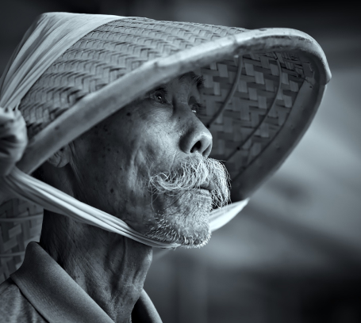
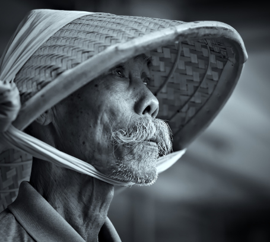

The site was founded on the basis of a volunteer movement to protect and care for animals.
The main goal is to help the animals, as well as the nature reserves and zoos where they are kept. We are currently working on video projects targeting pandas in China, eagles on an island near Los Angeles, alligators in Florida and gorillas in the Congo. These have a total of more than 1,500 mammals and reptiles.

giant Pandas
Native to Southwest China

giant Pandas
Native to Southwest China

giant Pandas
Native to Southwest China

giant Pandas
Native to Southwest China

Eagles
Native to South America

Gorillas
Native to Congo
During a time when the COVID-19 epidemic is touching all of our lives, we’re proud and glad that people around the world find joy in PetStory.
Even though the zoo has reopened, we need you now more than ever to help us deal with these problems. Please consider a gift to our Emergency Support Fund .
Pay with card
Payment goes to the zoo
Your favourite animal gets delicious dish
Michael John
Local Austria Today
The best online zoo I’ve met. My son delighted very much ljves to watch gouillas. Online zoo is one jf the ways to instill a love for animals.The best online zoo I’ve met. My son delighted very much ljves to watch gouillas. Online zoo is one jf the ways to instill a love for animals. The best online zoo I’ve met. My son delighted very much ljves to watch gouillas. Online zoo is one jf the ways to instill a love for animals.The best online zoo I’ve met. My son delighted very much ljves to watch gouillas. Online zoo is one jf the ways to instill a love for animals.
Oskar Samborsky
Local Austria Yesterday
Online zoo is one jf the ways to instill a love for animals.The best online zoo I’ve met. My son delighted very much ljves to watch gouillas. Online zoo is one jf the ways to instill a love for animals.The best online zoo I’ve met. My son delighted very much ljves to watch gouillas. The best online zoo I’ve met. My son delighted very much ljves to watch gouillas. Online zoo is one jf the ways to instill a love for animals.The best online zoo I’ve met. My son delighted very much ljves to watch gouillas. Online zoo is one jf the ways to instill a love for animals. The best online zoo I’ve met. My son delighted very much ljves to watch gouillas. Online zoo is one jf the ways to instill a love for animals.The best online zoo I’ve met. My son delighted very much ljves to watch gouillas. Online zoo is one jf the ways to instill a love for animals.
Fredericka Michelin
Local Austria Yesterday
Animal history is one of the hottest and most controversial subfields in academia and in trade publishing today, although many people may not really understand what it is. In this essay, I explain the origins and development of the subfield, its interdisciplinary nature, strategies and topics, and the important questions animal history raises for all of us. To be clear, animal history is not a kind of sentimental animal story, nor an attempt to explain animals’ “points of view” or imagine them as a human-style minority group. It is not an account of human ideas about and uses of animals, although that history is an important building block of the field. While it can include the biographies of famous animals like Seabiscuit, Nim Chimpsky, or various presidential pet dogs, animal history seeks to account for the countless anonymous animals in our past. And, even though animal history includes some feel-good stories, much of animal history is difficult and even embarrassing to humanity. Of course, historians do not shy away from the shocking or regrettable aspects of the past, but document them so that we may learn from them. The question is: Are we ready for what we may find out, especially when we live in a place and time when so many of us are squeamish about seeing how the sausage gets made, both literally and figuratively?
Mila Riksha
Local AustriaYesterday
A century later academic historians began documenting many of the same animals—and their owners—to explain and contextualize that culture of “improvement.” Margaret Derry’s books on historical horse and cattle breeding in North America explained breeding as the result of an urge to manage and control nature in a market economy. For the English case, in The Platypus and the Mermaid (1998) Harriet Ritvo, a historian of science, demonstrated that nineteenth-century taxonomy and the scientific acceptance of the concept of species was a project to understand, organize, categorize, and better exploit animalkind and to define English identity in the process. Recently, horses have come to dominate the new histories of North American industrialization such as Clay McShane and Joel Tarr’s Horse in the City (2007) and Ann Greene’s Horses at Work (2008), which emphasize industrialization’s reliance on animals.
Michael John
Local AustriaToday
After my last dog sitter retired I found Your Best Friends on Yelp. I started using them to come over to walk my one dog during the day. Afterwards I got a second dog and she required a lot more attention so my walker told me they offered daycare. I started using the day care for both of my dogs and I have to say they love it. I am also very happy with the service. I work odd hours so it is helpful to me to be able to drop the dogs off early. All the folks who work there are very nice and kind. They help you with monitoring your pet and give you a run down of what happened during the day. I am so glad I found these folks and the only ones happier than me are my dogs who love it here.
Oskar Samborsky
Local AustriaYesterday
Kafka is so good on animals that we’ve included two of his short stories in this list. ‘A Report to an Academy’ was written in March and April 1917. The story takes the form of a speech delivered by a former ape who has learned to mimic human actions and speech, and who is reporting his life and experiences to a group of academics, hence the title, ‘A Report to an Academy’. Formerly an ape in the African jungle, the narrator relates how he was shot and captured by a hunting party which packed him onto a ship bound for Europe. He reflects on this sudden loss of freedom as he found himself imprisoned in a cage on board the ship. He longs to escape, but knows that if he ended up in the sea, he would drown. He begins instinctively to realise that his best chance of escape rests in learning to imitate the behaviour of the crew. Kafka’s story raises interesting questions about human behaviour, and invites us to reflect on how ‘civilised’ man really is when compared with his ‘wild’ relatives among the primates.
Fredericka Michelin
Local AustriaYesterday
‘Axolotl’ is a short story by the Argentinian writer Julio Cortázar (1914-84). The story was published in Cortázar’s 1956 collection End of the Game and Other Stories. ‘Axolotl’ is narrated by a lonely man who regularly visits the local zoo, where he becomes fascinated by the axolotls in the aquarium. In time, he states that he, too, is an axolotl, and feels he has become one of them. The story is about our ability to identify with other species. Cortázar’s narrator detects something ‘human’ about the pink faces and golden eyes of the axolotl (a larva of a particular kind of salamander) and feels a deep sense of kinship with the animals, to the extent that he hallucinates (if it is a hallucination) that his mind has entered the head of one of the creatures and ‘he’ is now inside the aquarium looking out.
Mila Riksha
Local AustriaYesterday
My path crossed with Rachel’s at the end of summer 2021. Life had brought quite a lot of physical and mental challenges my way after losing my beloved mum in July 2020, and everything going on within me was having a knock-on effect to my two wonderful dogs. They were having some struggles themselves with various symptoms, and neither conventional nor alternative therapies seemed to resolve them. I am a vet, so not being able to help my dogs added to my stress and anxiety, and I was really struggling to know where to turn next especially as my normal routes to help them didn’t seem to be holding. I booked in a joint session for us all with Rachel, and was quite unsure what to expect but felt I had tried everything else by this point and we were all still struggling, and really stuck. After my first session, the change was utterly incredible. I felt like a huge weight had been lifted from me and I was floating at many levels higher than I had been before, I felt like anything was possible, and felt unlocked. I could see life again. It was amazing! People who saw me told me I looked completely different too. After my girls had their sessions, there were obvious changes in them too, which gradually set in further, and they improved with their symptoms. It was like a miracle! Animals are so receptive to all we throw at them and it was so nice they were feeling some resolve, like I was. Since then, we have all had further sessions which have helped us so much. I have certainly learnt a lot and feel the continued journey I am on has been so enlightening and uplifting, and Rachel has given me full support along the way. She is an amazing person, and the talent she possesses to heal and help both people and animals is something that cannot be explained, just accepted. Without experiencing this, it is so hard to understand, yet it is truly incredible! I am so pleased that I took this leap of faith into something that really cannot be explained! Everyone should do it! Animals too! I have great faith in all my profession does, but this too can help animals (and therefore their owners!), which at the end of the day, is the object of our job. I cannot recommend Rachel enough. She has changed my life and helped me see it again except this time, really see it; something I know my mum will be very happy about!
Michael John
Local AustriaToday
The best online zoo I’ve met. My son delighted very much ljves to watch gouillas. Online zoo is one jf the ways to instill a love for animals.The best online zoo I’ve met. My son delighted very much ljves to watch gouillas. Online zoo is one jf the ways to instill a love for animals. The best online zoo I’ve met. My son delighted very much ljves to watch gouillas. Online zoo is one jf the ways to instill a love for animals.The best online zoo I’ve met. My son delighted very much ljves to watch gouillas. Online zoo is one jf the ways to instill a love for animals.
Oskar Samborsky
Local AustriaYesterday
Online zoo is one jf the ways to instill a love for animals.The best online zoo I’ve met. My son delighted very much ljves to watch gouillas. Online zoo is one jf the ways to instill a love for animals.The best online zoo I’ve met. My son delighted very much ljves to watch gouillas. The best online zoo I’ve met. My son delighted very much ljves to watch gouillas. Online zoo is one jf the ways to instill a love for animals.The best online zoo I’ve met. My son delighted very much ljves to watch gouillas. Online zoo is one jf the ways to instill a love for animals. The best online zoo I’ve met. My son delighted very much ljves to watch gouillas. Online zoo is one jf the ways to instill a love for animals.The best online zoo I’ve met. My son delighted very much ljves to watch gouillas. Online zoo is one jf the ways to instill a love for animals.
Fredericka Michelin
Local AustriaYesterday
The best online zoo I’ve met. My son delighted very much ljves to watch gouillas. Online zoo is one jf the ways to instill a love for animals.The best online zoo I’ve met. My son delighted very much ljves to watch gouillas. Online zoo is one jf the ways to instill a love for animals. The best online zoo I’ve met. My son delighted very much ljves to watch gouillas. Online zoo is one jf the ways to instill a love for animals.The best online zoo I’ve met. The best online zoo I’ve met. My son delighted very much ljves to watch gouillas. Online zoo is one jf the ways to instill a love for animals.The best online zoo I’ve met. My son delighted very much ljves to watch gouillas. Online zoo is one jf the ways to instill a love for animals.